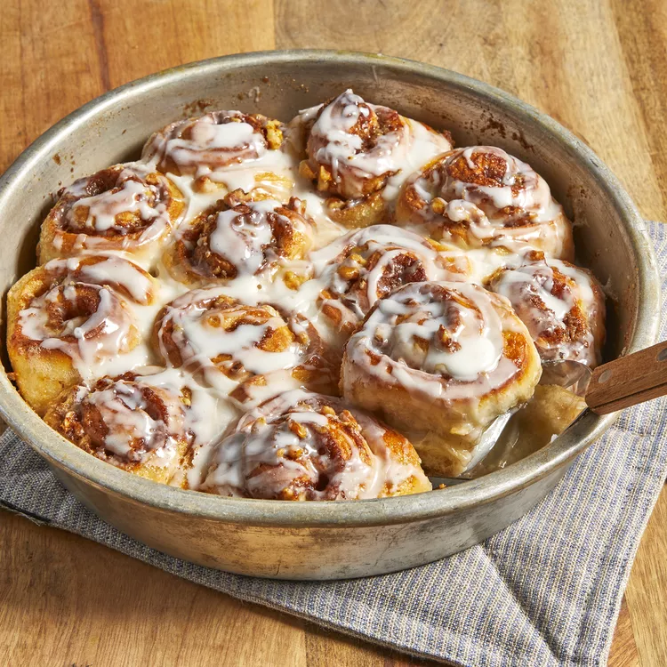

Cinnamon Rolls

Description
The first time I made these easy cinnamon rolls, I made a mess and they STILL turned out! They are gone in 2 days
at
my house. Simple to make and super yummy.
Ingredients
- 1 (1 pound) loaf frozen bread dough, thawed
- 3 tablespoons butter, melted
- ⅔ cup brown sugar
- ½ cup chopped walnuts
- 1 teaspoon ground cinnamon
- 1 teaspoon water, or as needed
- ⅓ cup heavy whipping cream
- ⅔ cup sifted confectioners' sugar
- 2 tablespoons milk
- 1 dash vanilla extract
Directions
- Lightly grease 2 round cake pans with butter.
- Roll bread dough out to an 6x18-inch rectangle. Brush with melted butter. Combine brown sugar, walnuts, and
cinnamon in a small bowl; sprinkle over butter. Roll dough into a log, starting at the long edge. Moisten
edge
with water and seal. Cut log into 20 slices; arrange rolls, cut sides down, in prepared cake pans. Cover
with a
towel and let rise in a warm place until doubled in volume, about 90 minutes.
- Preheat oven to 350 degrees F (175 degrees C). Pour heavy cream over dough.
- Bake in preheated oven until golden brown, about 25 minutes.
- Mix confectioners' sugar, milk, and vanilla extract in a small bowl; drizzle over warm cinnamon rolls to
serve.